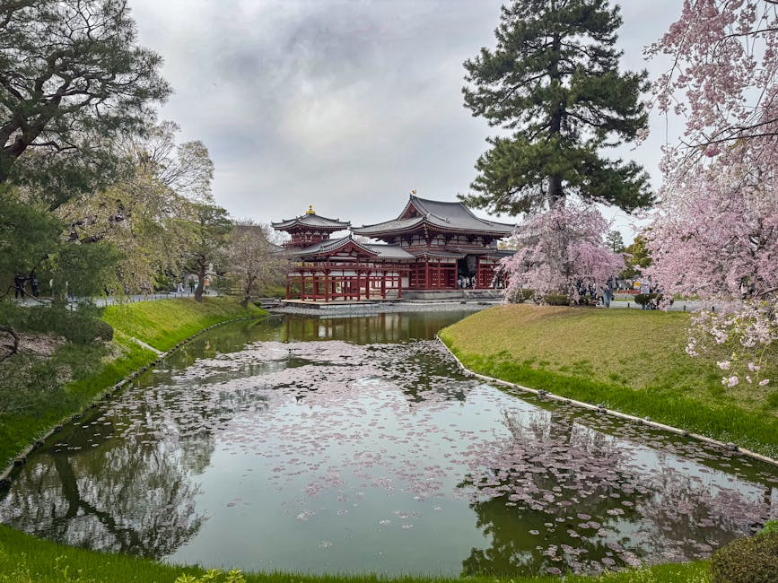
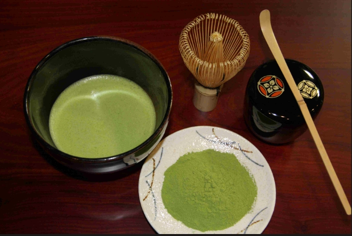
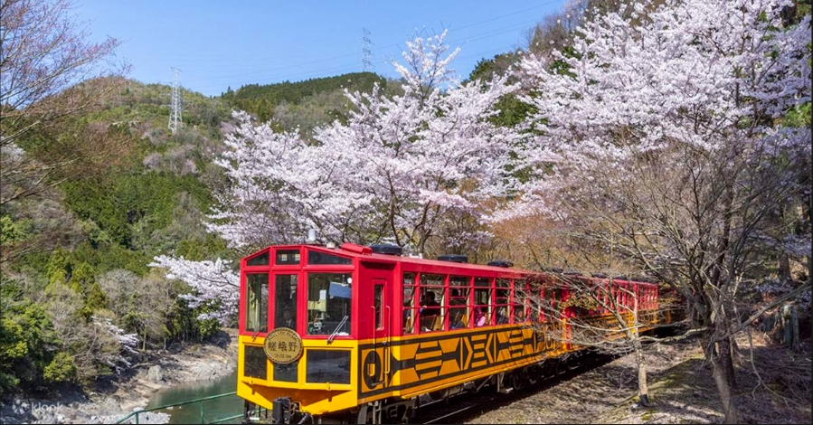
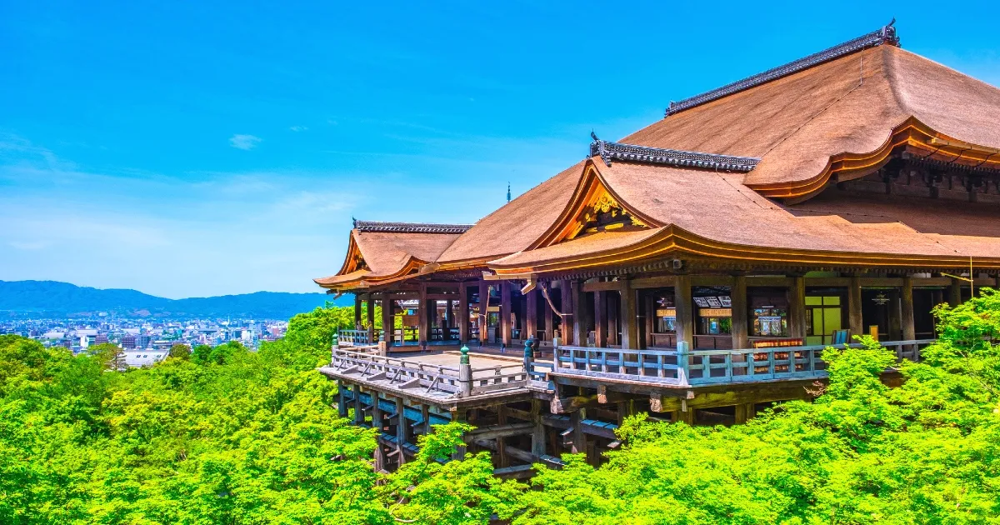
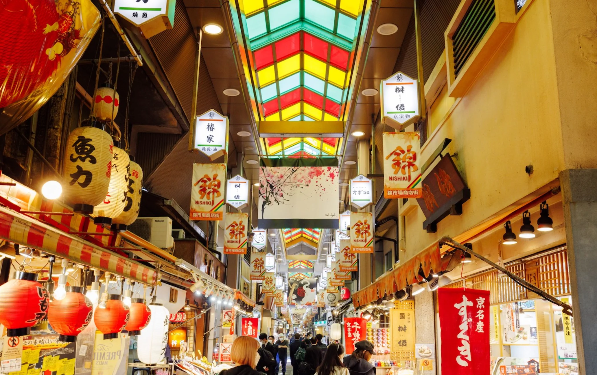

關西空港 → 宇治・平等院 → 抹茶體驗・宇治老街 → 京都翠嵐豪華精選

平等院・鳳凰堂

宇治・抹茶
平等院
平安時代貴族藤原賴通於 1052 年建造的佛教寺院，以鳳凰堂聞名於世——它被印在日本 10 圓硬幣上，是日本最具代表性的建築之一，1994 年列為世界文化遺產。寺內鳳翔館收藏 52 尊雲中供養菩薩像與梵鐘等珍貴文化財，宇治川畔的庭園四季皆美。
抹茶體驗・宇治老街
宇治是日本抹茶的故鄉。在老街的茶屋裡親手刷一碗抹茶，沿著參道慢慢走——第一天的下午，把節奏放慢下來。
飯店 → 嵐山小火車（龜岡 → 嵯峨） → 人力車・竹林小路・野宮神社 → 金閣寺

嵐山・保津峽小火車
金閣寺・鏡湖池
嵐山小火車・人力車
復古的觀光小火車沿保津峽緩緩行駛，從龜岡一路晃到嵯峨。下車後換乘人力車，車伕拉著你穿過竹林小路、停在野宮神社——嵐山最舒服的打開方式。
金閣寺
京都最具代表性的金色寺院，正式名稱鹿苑寺。三層樓閣外貼金箔，倒映在鏡湖池中，美得令人屏息。冬日午後的光斜斜打在金箔上——這是京都必訪的一幕。
飯店 → 和服體驗 → 清水寺 → 錦市場 → 飯店

清水寺・清水舞台

錦市場・京之廚房
清水寺・和服體驗
早晨換上和服，從二年坂、三年坂一路走上清水寺。建於 778 年的世界文化遺產，懸空的清水舞台由 139 根大圓木支撐，未用一根釘子。音羽瀑布分三道泉水，分別祈學業、戀愛與長壽——穿著和服站在舞台上望京都，這一張照片值得。
錦市場
四百年歷史的「京之廚房」。狹長的市場街裡，漬物、玉子燒、海產與京野菜一攤接一攤，邊走邊吃，把京都的味覺記憶帶回家。
飯店 → teamLab Biovortex Kyoto → 臨空城 Outlets → 關西空港 → 台北
teamLab Biovortex Kyoto
京都最新的常設美術館——走進 teamLab 的光與藝術之中，身體成為作品的一部分。給家族裡每一代人，留下不一樣的最後一天。
臨空城 Outlets
回程前的最後採買。距離關西空港一站之遙，買齊伴手禮，從容登機。